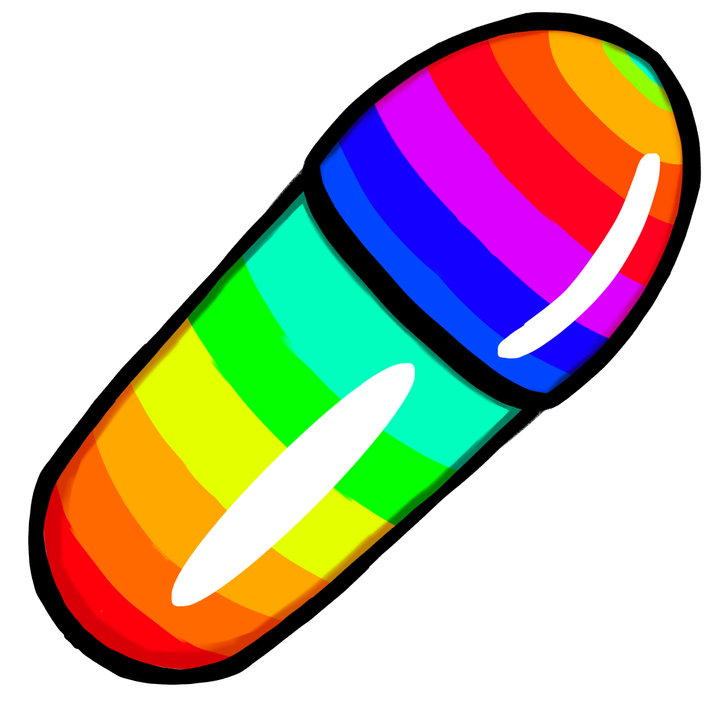

Description: Addicted to Laughter is a top down infinite exploration game, where the player must collect pills to increase happiness. How long will you be able to survive the endless maze of offices?
This project was a submission for Global Game Jam 2024. My role for the project was primarily as a UI programmer and designer in which I implemented all of the UI and menus in the game. I worked on the design of the game as well.
Trailer:
Gameplay Walkthrough:
Screenshots:
Contributions:
Art:
This is the poster I created for our submission. I wanted to try and capture the spirit of the game through the poster as much as possible. Therefore, I tried to hint at our happiness mechanic through the transition from the colorful background to greyscale at the bottom. I also put our main character in office attire because it fit the theme of our game.
Like the poster, I wanted to try and capture the spirit of the game through the title card. I made sure the text was as legible as possible by making it white white a black outline. I also added the rainbow coffee cup to emphasize the main mechanic of the game.
This is the slider for the happiness meter in the game. By using the flourescent colors, not only did the slider fit the theme of the game, but it added pressure to the player when they're happiness was low. As the happiness level got to low levels, the screen would turn black and white but the fluorescent slider would stay the same color, adding pressure to the player to find more pills. This is very similar to the technique the Call of Duty franchise uses to achieve the same effect for players at low health.
This is the pill for the happiness slider in the game. It was used to mark where the end of the slider was in the game.

Menus:
This is the menu for the game. I wanted to keep the menu very simple, so I opted to go for a static background and four buttons. The high score counter in the top left was a collaboration between Johnathan Scwenk and me. He added the scripts to save the player's high score and I added the UI element on the home screen.
The controls menu for the game is also very simple. It outlines the movement controls and the controls for the pause menu. Additionally, our team decided to add the "Pills don't respawn...." text, as we noticed playtesters did not realize they could not return to previous rooms to gain more pills. After giving that advice to the players on the control screen, we noticed a significant improvement in this issue.
This is the credits screen for the game, it highlights everyone's name and their role on this project. It also gives credit for the music we used in this game.
This is the pause menu for the game. Like the other menus in the game, we wanted to keep the pause menu as simple as possible. Therefore, we left the menu with only three buttons. As our game has simple controls and a short play time, we decided to leave the controls menu on the main menu screen.